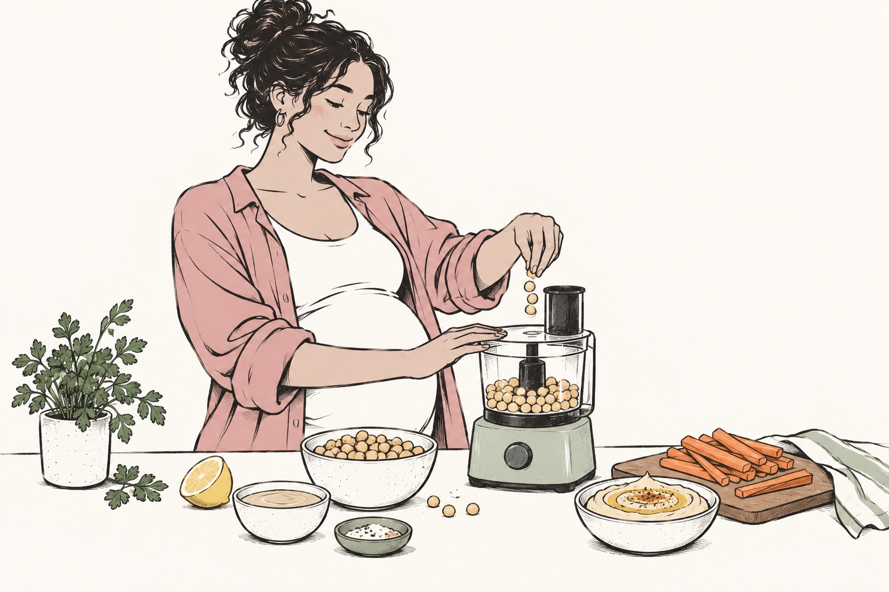

Food questions.
A little more clarity.
Practical answers for the shop, the kitchen and the moment you wonder, “Can I eat this?”
30 guides to explore

Can You Eat Sushi While Pregnant? What to Order and Ask
Learn what to ask about sushi during pregnancy, from cooked fillings and raw toppings to fish choices and takeaway handling.
Read the guide
Can You Eat Deli Meat While Pregnant? A Sandwich Guide
A practical guide to deli meat during pregnancy: heating the filling, choosing sandwich alternatives and checking storage.
Read the guide
What Cheese Can You Eat While Pregnant? Read the Label
Check cheese type, pasteurization and preparation during pregnancy, with practical label questions and shopping advice.
Read the guide
Coffee During Pregnancy: Count Caffeine Across Your Day
Count caffeine across coffee, tea and other sources during pregnancy, and use actual serving information to plan your day.
Read the guide
Can You Drink Apple Cider While Pregnant? The Label Check
Check apple cider pasteurization, alcohol content and storage during pregnancy before choosing your autumn drink.
Read the guide
Thanksgiving While Pregnant: A Practical Plate Guide
Enjoy Thanksgiving with practical pregnancy food checks for turkey, stuffing, party holding and the next day's leftovers.
Read the guide
Halloween While Pregnant: Candy, Cider and Party Food
A calm pregnancy guide to Halloween treats, cider, raw dough and perishable party food, with practical choices.
Read the guide
Can You Drink Eggnog While Pregnant? Check These Details
Check milk, eggs, alcohol and refrigeration when choosing eggnog during pregnancy, including homemade preparations.
Read the guide
Leftovers During Pregnancy: Store and Reheat Them Well
Make tomorrow's meal easier with practical guidance on cooling, dating, storing and reheating leftovers during pregnancy.
Read the guide
Can You Eat Eggs While Pregnant? Runny, Scrambled and More
Understand US pregnancy guidance for runny eggs, cooked egg dishes and uncooked sauces, with useful ordering questions.
Read the guide
Salmon During Pregnancy: Cooked, Smoked and Canned
Understand the differences between cooked, refrigerated smoked and canned salmon during pregnancy, including preparation checks.
Read the guideTuna During Pregnancy: The Type Matters More Than the Name
Read the tuna type on the label and understand FDA fish categories, weekly serving guidance and cooking considerations.
Read the guideCan You Eat Shrimp While Pregnant? Cooking and Ordering
A practical guide to cooked shrimp during pregnancy, from preparation and restaurant questions to cold handling.
Read the guide
Salads During Pregnancy: Leaves, Toppings and Storage
Check salad leaves, dressings, toppings and cold storage during pregnancy without relying on a healthy menu label.
Read the guide
Can You Eat Sprouts While Pregnant? Raw and Cooked
Learn why raw sprouts need a different approach during pregnancy, what to ask when ordering and how to keep the crunch.
Read the guide
Caesar Salad During Pregnancy: Ask About the Dressing
Ask about Caesar dressing during pregnancy, including egg preparation, toppings, washed leaves and refrigeration.
Read the guide
Ice Cream During Pregnancy: Dairy, Eggs and Storage
Check dairy, egg preparation and frozen storage when choosing ice cream during pregnancy, at home or at a shop.
Read the guide
Hummus During Pregnancy: Ingredients and Fridge Habits
A practical pregnancy guide to hummus ingredients, opening instructions, cold storage and checking a specific recall.
Read the guide
Smoothies During Pregnancy: Build a Better Blending Routine
Build a useful pregnancy smoothie routine with known ingredients, treated juice, appropriate produce and clean equipment.
Read the guide
How to Wash Fruit and Vegetables During Pregnancy
Use plain running water and practical preparation habits to wash fruit and vegetables during pregnancy.
Read the guide
Eating Out While Pregnant: Four Useful Menu Questions
Four specific questions to ask when eating out during pregnancy: ingredients, cooking, raw additions and holding.
Read the guide
Takeout During Pregnancy: From Doorstep to Dinner
Handle pregnancy takeout from ordering to arrival, with practical preparation checks, prompt storage and leftover planning.
Read the guide
Pregnancy Meal Prep: Plan a Few Meals, Keep Them Flexible
Plan a few flexible pregnancy meals with manageable portions, clear dates, appropriate cooling and a realistic backup.
Read the guide
A Pregnancy Grocery List That Makes Dinner Easier
Build a practical pregnancy grocery list around usable meals, varied ingredients, label checks and your actual week.
Read the guide
Pregnancy Breakfast Ideas for Mornings That Feel Different
Flexible pregnancy breakfast ideas for changing mornings, including gentle, cold and cooked options with preparation checks.
Read the guide
Pregnancy Lunch Ideas for Work, Home and Busy Days
Find practical pregnancy lunches for home and work, with meal options and realistic refrigeration and transport plans.
Read the guide
Pregnancy Dinner Ideas When You Have Run Out of Ideas
Six adaptable pregnancy dinner formats for changing appetites and busy evenings, with practical cooking considerations.
Read the guide
Pumpkin Spice Lattes During Pregnancy: Check Your Cup
Check your pumpkin spice latte's size, caffeine and ingredients during pregnancy using current information for the actual drink.
Read the guideWhat a Pregnancy Food Scanner Can Help You Check
Understand what Embryly's pregnancy food and barcode scans can help you check, and which details need separate verification.
Read the guideReading Food Labels During Pregnancy: Beyond the Barcode
Read ingredients, allergens, processing and storage on the actual package alongside your pregnancy barcode lookup.
Read the guideNo matching guides yet. Try another food or choose All.